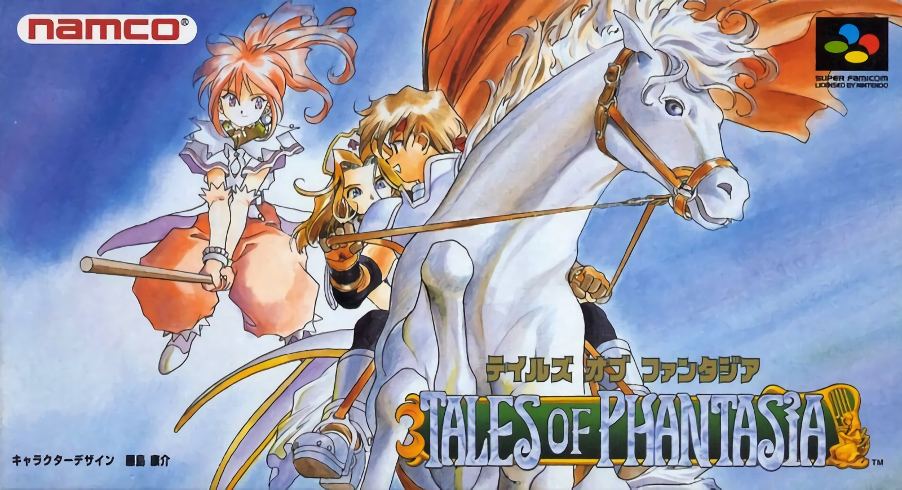

テイルズオブファンタジア
 1995年12月15日発売プラットフォーム：SFC , PS , GBA , PSP , 携帯電話 , iOS
記念すべきシリーズ第1作目。
SFC作品では珍しく、起動するとOPアニメーションが再生されることが目を引く。ゲーム内でも随所にアニメーションムービーによる演出が存在しており、同時期に存在していた他RPGとの大きな違いとも言えるだろう。
戦闘システムはRPGでよく見られるコマンド制ではなく、リアルタイムで敵味方が行動する、どちらかと言えば格闘ゲームに近い印象を受けた。
上記二つの要素は本作品以降の作品群にも受け継がれており、テイルズオブシリーズの特色とも言える要素になった。
本作品はCERO:Aの指定を受けているが、ストーリーの始まりは
“主人公の住んでいる村の住民が、狩りに出ていた主人公と友人以外皆殺しにされてしまい、その復讐の為に旅に出る”
というかなりハードなものである。冒頭から心を打ちのめす展開ではあるが、ただ暗いままの話として進まず、キャラクター達のコミカルな面が見えるシーンもあり、明暗のバランスのとれたストーリーとなっていると感じた。